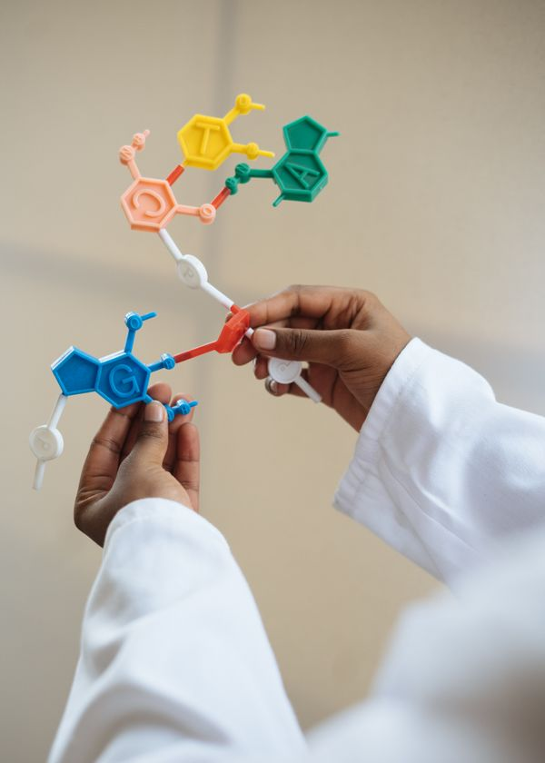

Pare de travar na hora de liberar o laudo de urina.
Em poucas aulas, você passa a reconhecer os principais achados da urianálise e laudar com muito mais segurança.
QUERO LAUDAR COM SEGURANÇA AGORAAcesso imediato · garantia de 7 dias · hospedado na Hotmart

Isso funciona mesmo que...
Urianálise em 3 Camadas
O problema não é só falta de conteúdo. É conteúdo solto, sem conexão com a rotina. Aqui você aprende a enxergar a urina por etapas, para interpretar com lógica e não no chute.
Pré-analítico
Coleta, conservação e transporte — onde a maioria dos erros de laudo realmente começa.
Físico-química
Volume, cor, densidade, pH e a correlação de cada marcador da fita reagente.

Microscopia
Cristais, cilindros, células e elementos figurados, identificados com critério.
Feito para quem lida com a urina na prática
✓ Para quem é
- ✓ Biomédicos que precisam ganhar mais segurança na leitura da urina
- ✓ Farmacêuticos que atuam em análises clínicas e querem evitar erros
- ✓ Médicos que lidam com exames urinários e querem interpretar melhor os achados
- ✓ Profissionais de enfermagem que desejam entender a urianálise com mais profundidade
- ✓ Quem trabalha no laboratório e sente que ainda lauda no automático
- ✓ Quem já viu microscopia urinária, mas ainda trava na hora de identificar estruturas
✗ Para quem não é
- ✗ Quem quer um conteúdo superficial e sem compromisso com técnica
- ✗ Quem não atua e não pretende atuar com exames laboratoriais
- ✗ Quem busca promessa mágica sem estudar a base
- ✗ Quem não quer aplicar o conteúdo na rotina real
Como Funciona
Introdução à Urianálise
Você entende a importância do exame urinário e o que ele revela sobre doenças metabólicas, renais e infecciosas.
Anatomia e Fisiologia Urinária
Você revisa rins, ureteres, bexiga e uretra, além da formação e eliminação da urina.
Cuidados Pré-Analíticos
Você aprende coleta, conservação, transporte e como evitar interferências que distorcem o resultado.
Análise Física
Você estuda volume, cor, aspecto, odor, densidade e pH com leitura mais segura.
Análise Química
Você entende as fitas reagentes e a correlação de glicose, proteínas, cetonas, bilirrubina, nitrito e outros marcadores.
Microscopia Urinária
Você aprende a identificar hemácias, leucócitos, cilindros, células epiteliais e cristais.
Benefícios
Mais segurança na leitura
Você entende o que está vendo e reduz a chance de interpretar errado.
Melhor liberação de laudos
Você ganha clareza para concluir resultados com mais precisão.
Menos medo de errar
Você para de travar diante do microscópio e passa a decidir com confiança.
Domínio da fase pré-analítica
Você aprende onde os erros começam e como evitá-los antes que contaminem o resultado.
Leitura física, química e microscópica
Você organiza a análise da urina por etapas e não fica perdido no meio do exame.
Mais credibilidade profissional
Você transmite mais firmeza para equipe, supervisão e rotina laboratorial.
Você sai do modo inseguro
Você deixa de ser quem só repete protocolo e se torna um profissional que interpreta com critério.
Prova Social
"Eu travava na microscopia urinária. Depois do curso, parei de olhar a lâmina no medo e comecei a interpretar com lógica."
Marina S.
Biomédica de análises clínicas
"Finalmente entendi como correlacionar os achados da urina com o quadro clínico sem ficar perdido."
Dr. Paulo R.
Médico generalista
"A parte pré-analítica mudou meu jeito de trabalhar. Hoje eu enxergo onde o erro começa antes de chegar no laudo."
Juliana F.
Farmacêutica bioquímica
"O conteúdo é direto, técnico e aplicável. Foi o que eu precisava para parar de decorar e começar a entender."
Carla M.
Enfermeira
ACESSO COMPLETO
R$ 158,00
R$ 67,00
ou 12x de R$ 5,58
QUERO ME INSCREVER AGORAGuia Rápido de Parâmetros Urinários
Evita confusão na leitura dos principais achados.
Checklist Pré-Analítico
Reduz erro antes da análise começar.
Tabela de Interpretação do Sedimento
Acelera a identificação de elementos figurados e cristais.
Garantia de 7 dias
Se você não sentir mais segurança para entender os fundamentos da urianálise, devolvemos seu dinheiro.
Menos que uma consulta — e muito mais que um curso
Você investe R$ 67,00 e sai com uma base sólida para interpretar a urina — do pré-analítico à microscopia — e liberar laudos com muito mais confiança na sua rotina.
Acesso com condições especiais por tempo limitado, direto na plataforma da Hotmart.
Antes de decidir
Esse curso serve para quem já trabalha com urina e quer parar de errar na interpretação?
Sim. O foco é justamente fortalecer sua leitura da urina e te dar mais segurança na liberação do laudo.
Preciso ter muita experiência em microscopia urinária?
Não. O curso começa pela base e avança até a identificação dos principais achados no sedimento urinário.
Vai abordar a parte pré-analítica também?
Vai, e isso é essencial. Muita falha no laudo nasce antes da análise, na coleta, conservação e transporte.
O conteúdo é útil para biomédicos, farmacêuticos, médicos e enfermagem?
Sim. O material foi pensado para profissionais da área da saúde que lidam com urianálise na prática.
Vou aprender a identificar cristais e elementos do sedimento?
Sim. A microscopia urinária inclui elementos figurados e a identificação/classificação dos cristais.
Esse curso ajuda na rotina do laboratório?
Ajuda diretamente. Ele foi estruturado para melhorar sua leitura técnica e reduzir insegurança na liberação do resultado.
Chega de olhar a urina e torcer para estar certo.
Você tem dois caminhos: continuar inseguro na hora do laudo, ou assumir o controle da sua interpretação. A insegurança pesa mais do que você imagina.
SIM, QUERO DOMINAR A URIANÁLISEGarantia de 7 dias · checkout seguro via Hotmart